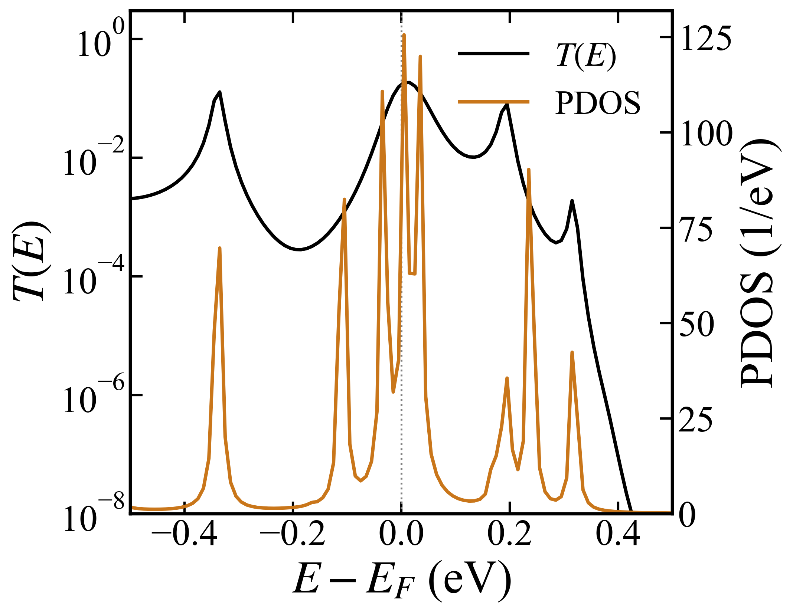
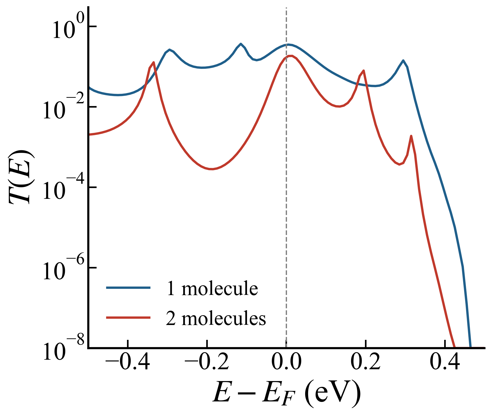
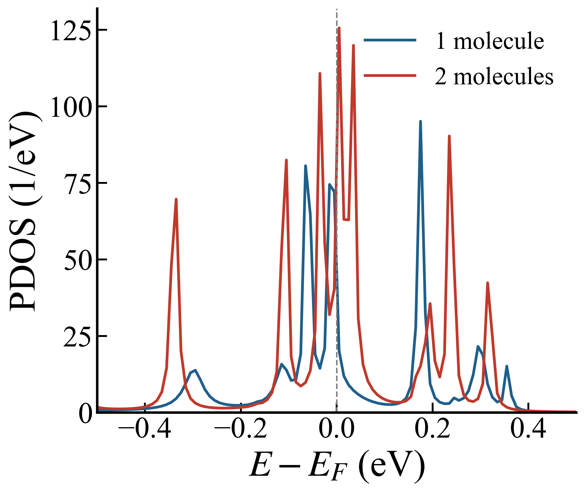

13. 2분자 접합 — zero-bias transport
Goal
브릿지가 Hf₂Se₉ 1분자에서 2분자로 늘어날 때 conductance가 얼마나 바뀌는지 잰다. 1분자 접합의 보정 전 값은 $T(E_F)$ = 0.355였다(08. 준위 보정). 2분자 stack은 VSe₃ 전극과 60° 계면 배향을 그대로 두고 터널링 경로만 분자 하나만큼 늘린다 (11. 회전 스캔). 이 페이지는 무보정 결과를 다룬다. 이 브릿지의 DFT+Σ shift는 12. 2분자 브릿지 분자준위에 있다.
Method
- device: 234 atom. VSe₃ 25 unit cell/side, H-terminated 계면, 그 사이에 relaxed 2분자 stack. scattering region atom 13–222, 전극 1–12과 223–234.
- 전자구조: TranSIESTA, vdW-DF2(LMKLL), MeshCutoff 500 Ry, k-grid (1,1,4), $\Gamma$-only 전극. DM+H+dQ 기준으로 수렴, $E_\mathrm{KS}$ = −673752.4512 eV.
- transport: TBtrans, −10 ~ +10 eV를 0.01 eV 간격 2000점, $\eta$ = 0.005 eV.
transmission과 DOS는
trans.TBT.nc에서 sisl로 읽었다. - projection: 분자 영역은 atom 104–134(H 캡, Hf₂Se₉ 2분자, bridging H 3개)이고 나머지는 VSe₃ wire로 셌다.
- HPC: Stampede3.
분자 준위 위치
무보정 vdW-DF2에서는 분자 준위(HOMO/LUMO)가 $E_F$ 근처(+0.005 eV)에 붙어 있다. $T(E_F)$ = 0.184이다.

1분자 vs 2분자 비교
분자를 하나 더 끼우면 window 평균 transmission($|E-E_F|\le0.5$ eV)이 1/5로 준다.
| 항목 | 1분자 (220 atom) | 2분자 (234 atom) | 비 |
|---|---|---|---|
| $T(E_F)$ | 0.355 | 0.184 | 0.52 |
| 평균 $T$, $|E-E_F|\le0.5$ eV | 0.100 | 0.020 | 0.20 |
| $E_F$ 분자 DOS (states/eV) | 20.2 | 125.6 | 6.2 |

